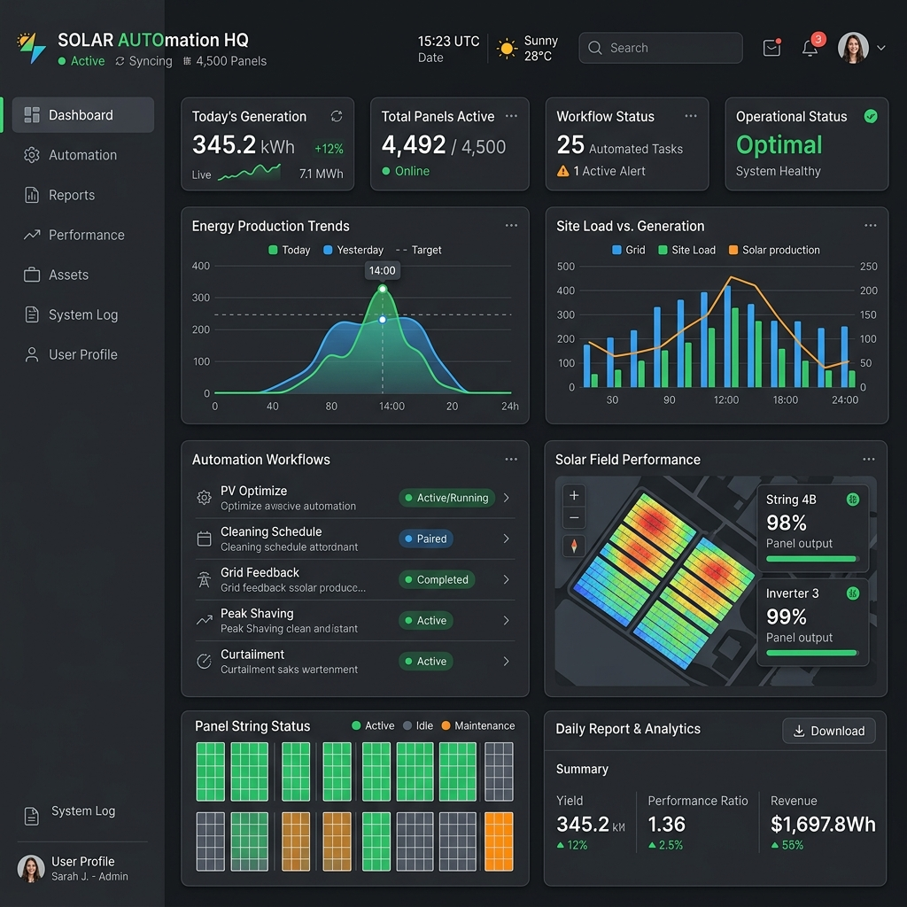

A custom operations platform for solar teams that needed faster proposal generation, cleaner field coordination, and better visibility into work happening across sites and workflows.
The operation needed better control over field activity, proposal workflow, and internal coordination. Too much work depended on manual updates, delayed reporting, and fragmented visibility across what had been completed, what was pending, and where teams needed to act next.

We built a custom operations platform that improved workflow movement, made key activity more visible, and supported faster execution for teams managing field-driven work.
The system focused on speed, visibility, and operational throughput rather than generic feature bloat.
Increase in operational throughput
Proposal and workflow turnaround
Better visibility into ongoing operations
If your team needs cleaner coordination, faster internal movement, and better reporting across operational work, we can help design the right system around it.